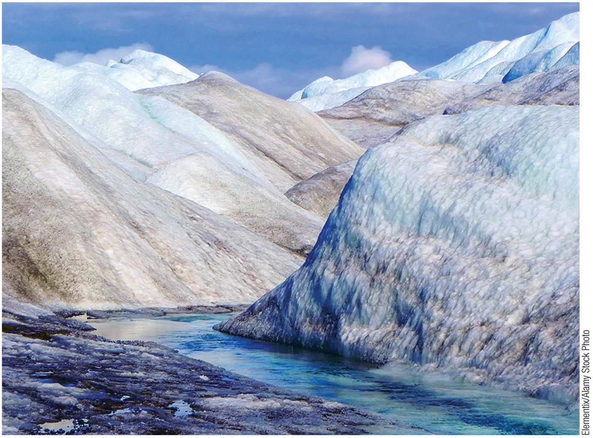
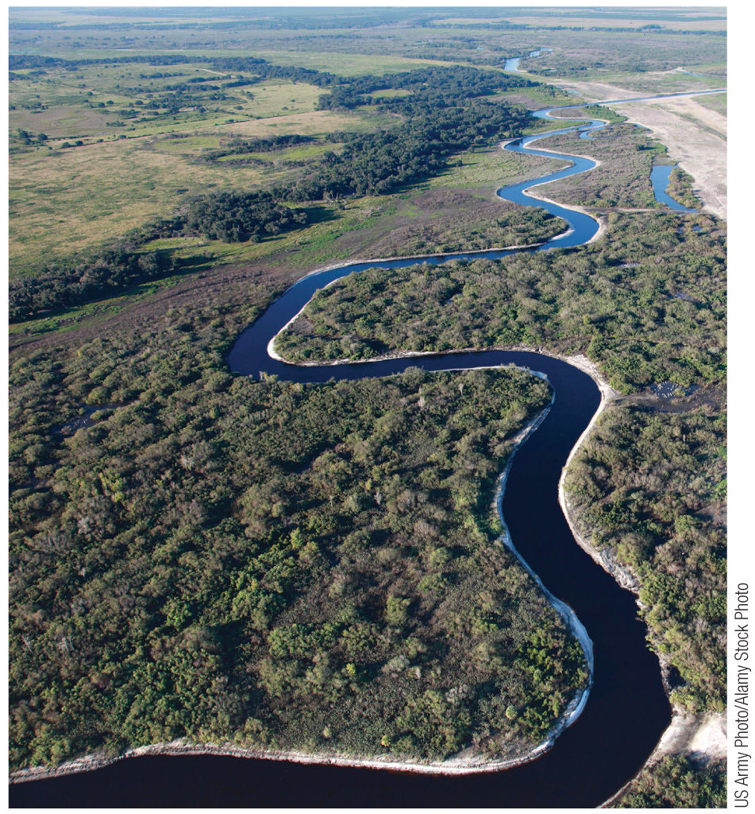
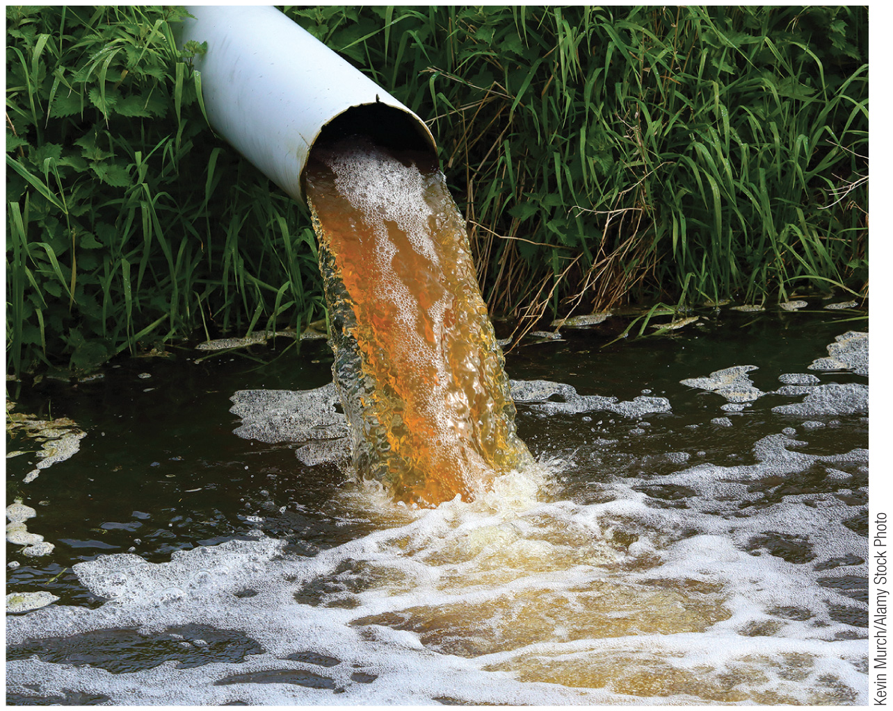
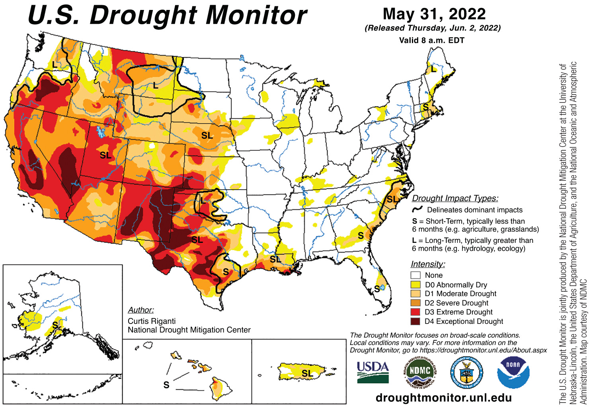
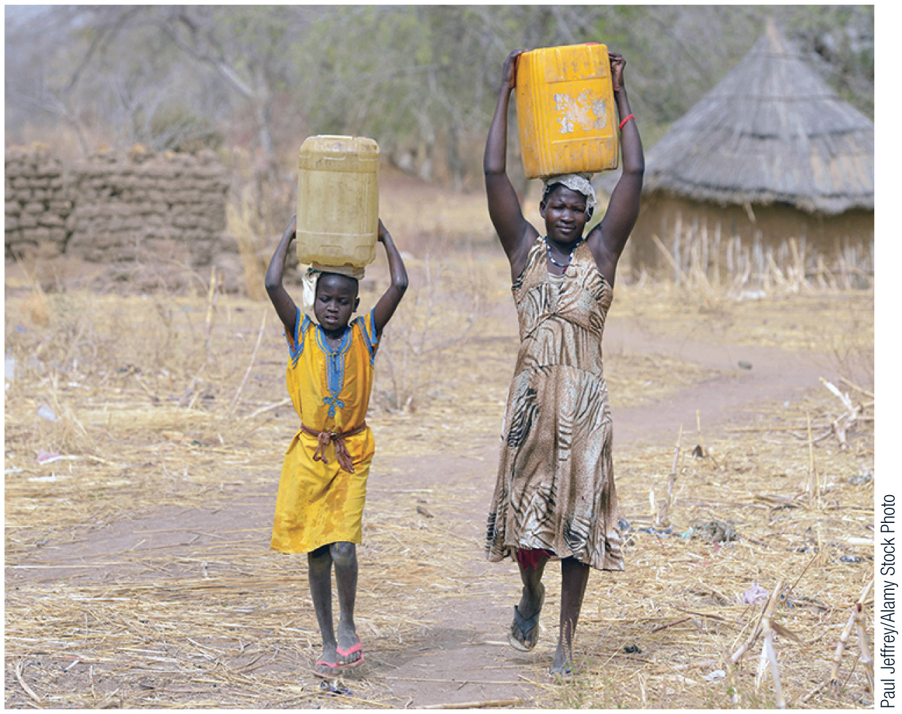
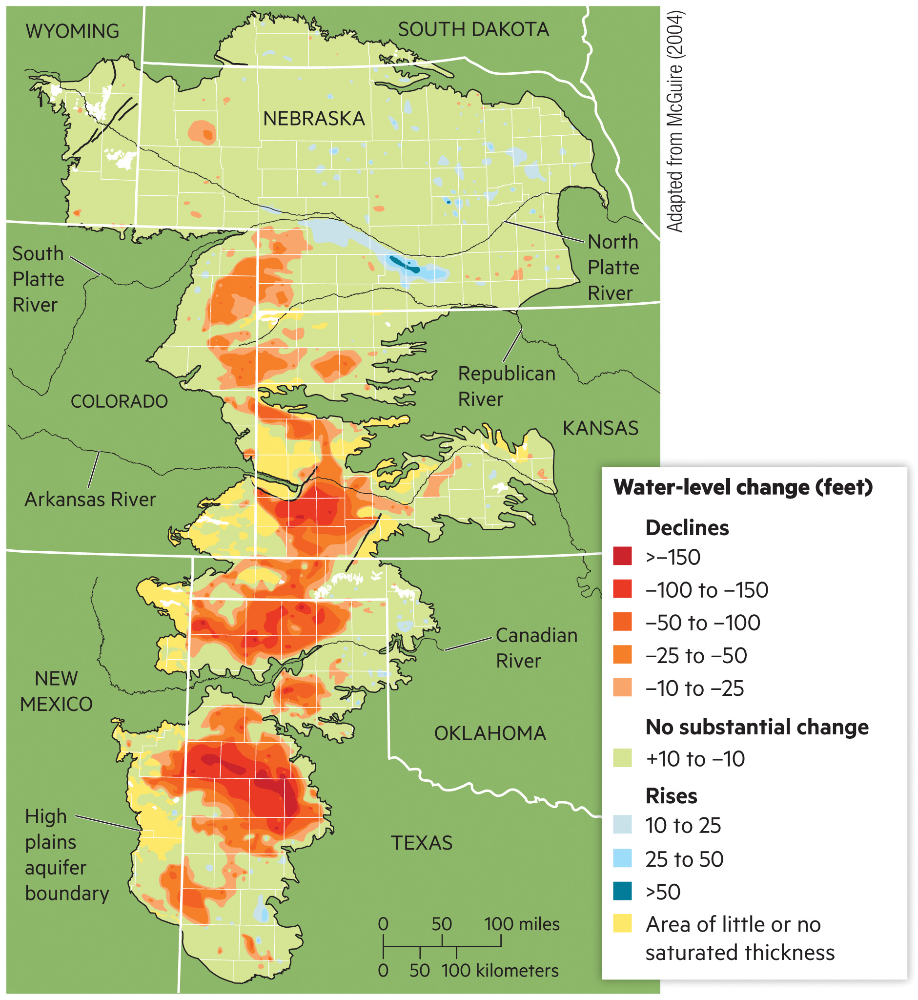
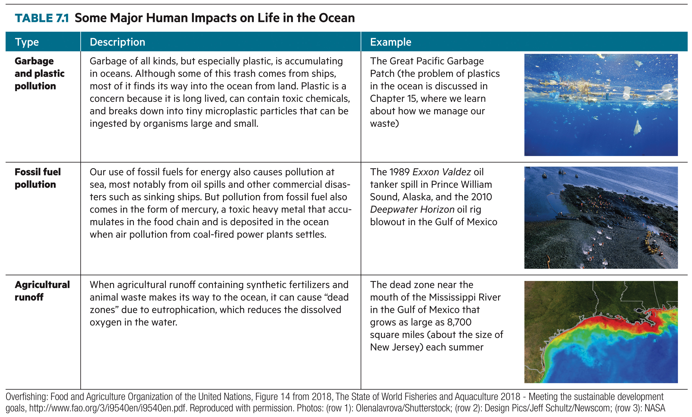
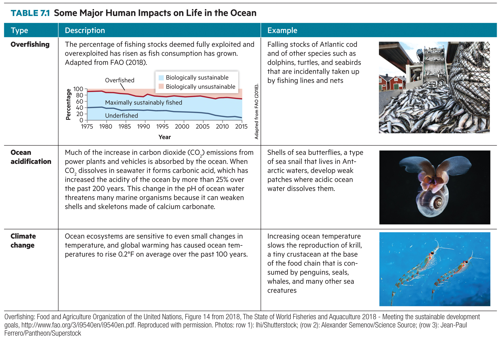

Here's what's on deck. Check Canvas for full instructions and submission links.
The hydrosphere is all the places on Earth that hold water. Water collects in reservoirs — parts of Earth where it remains for a period of time — and the ocean is by far the largest.
To cut costs while waiting for a new pipeline, Flint switched its water source in 2014 — a decision with severe consequences.
Water mining means withdrawing groundwater faster than it is replenished. This excessive groundwater withdrawal can lead to aquifer depletion.
A constant supply of water and power — paid for downstream.
Dams store water through dry seasons and generate hydroelectric power, and diversions carry that water to cities and farms. The costs fall on the river below the dam and on the people and ecosystems that depend on it.
Disrupted fish migration, lost wetlands, altered sediment transport, changed river temperatures, and diminished downstream flows.
Upstream dams and diversions have so reduced its flow that it no longer consistently reaches the Gulf of California.

Regulation is easiest when you can point to the pipe.
Contaminants from a clearly identifiable conduit — a pipe, ditch, channel, or well. The source is known, so it can be permitted and monitored.
Pollutants from broad, diffuse places — agricultural, residential, and industrial activities across a whole watershed.
Loose soil swept into waterways makes the water turbid (cloudy) and reduces light penetration.
Chemicals from agriculture, energy, and infrastructure (as in Flint); bacterial and viral contamination, including feedlot runoff.

Too much of a good thing: how fertilizer can starve a lake of oxygen.
Excess fertilizer runoff leads to increased levels of nitrogen and phosphorus, which fuel algae growth and, as the algae die and decay, oxygen depletion in the water.Sources: U.S. EPA, Nutrient Pollution; NOAA National Ocean Service, What Is Eutrophication?
Water isn't scarce everywhere, and it isn't used the same way everywhere. Before we ask how to conserve it, it helps to see where water stress is greatest — and where our water actually goes.

More than 2 billion people suffer from water scarcity. The UN's goal of water security means reliable access to safe, affordable water for everyone.

Spend 12 points on your city's water before anyone knows the weather. Then thirty years — and the headlines — arrive.
About the model: a teaching simulation in model water units, not a forecast. Demand grows with each city’s population and summer heat. Sources are used in order: recycled water, the river, storage, then groundwater. The river is shared: when the class claims more than a normal flow carries, every delivery is cut, and downstream cities are cut more. Each aquifer is dealt as renewable or fossil; recharge basins add groundwater recharge, and pumping an aquifer below a fifth of its volume causes subsidence that permanently shrinks it. Headline years (algal blooms, monsoon storms, heat waves, shortage declarations) test buffer zones, recharge, and conservation. A shortage costs population; a full supply lets the city grow at its chosen rate. Williams, A. P., Cook, B. I., & Smerdon, J. E. (2022). Rapid intensification of the emerging southwestern North American megadrought in 2020–2021. Nature Climate Change, 12, 232–234. · Konikow, L. F. (2015). Long-term groundwater depletion in the United States. Groundwater, 53(1), 2–9. · U.S. Bureau of Reclamation. (2007). Record of decision: Colorado River interim guidelines for Lower Basin shortages and coordinated operations for Lake Powell and Lake Mead.
Even where treatment works well, gaps remain. In the US, more than 90% of people are served by a water system with no violations — yet some communities still face unsafe water.
Map: groundwater-level change in the High Plains (Ogallala) Aquifer — a vivid picture of how hard clean, reliable supply can be to sustain. Adapted from McGuire (2004).

Human activity harms the ocean in three big ways — plastic garbage that breaks into toxic microplastics, fossil-fuel pollution from spills and airborne mercury, and agricultural runoff that creates oxygen-starved “dead zones.”

Three more pressures push ocean ecosystems toward collapse: overfishing faster than stocks can recover, a warming climate that disrupts food webs, and acidification as the ocean absorbs CO₂ and forms carbonic acid that dissolves shells.

ASU’s Global Futures Water Institute is “dedicated to forecasting and tackling water challenges at all scales, from local communities to national systems.” In the desert Southwest, individual choices add up — here’s where to start.